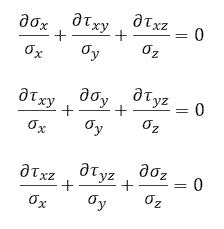

Resumo
Neste módulo, realizamos uma análise estrutural de um pedivela de bicicleta utilizando o software ANSYS Mechanical. O objetivo principal foi estudar o comportamento do pedivela de alumínio 6061-T6 sob uma carga estática de 100 lbf. A análise incluiu a definição das condições de contorno e carga, geração da malha, e resolução das equações de equilíbrio através do método de elementos finitos.
Objetivos
- Desenvolver uma solução para um problema de mecânica estrutural 3D usando ANSYS Mechanical.
- Verificar e validar os resultados numéricos obtidos no ANSYS.
- Relacionar as etapas do ANSYS aos conceitos de Análise de Elementos Finitos.
Objetivos Específicos
- Criar e analisar a forma deformada e o campo de deslocamento.
- Criar e analisar a distribuição de tensões no pedivela.
Especificação do Problema
Para esta aplicação, consideramos um pedivela de bicicleta composto por uma liga de alumínio 6061-T6, submetido a uma força estática. As propriedades do material incluem:
As condições do problema podem ser vistas na imagem abaixo e são as seguintes:

Equações Fundamentais
Considerando um elemento infinitesimal de material submetido a diferentes reações como compressão, tensão e cisalhamento, temos:
Para este problema, onde não há forças de corpo e a gravidade é desprezível, as tensões são relacionadas às deformações pela matriz de elasticidade do material.
Malha
Foi utilizado um método multizona, que decompõe automaticamente a geometria em regiões mapeadas e livres, gerando uma malha hexaédrica quando possível e preenchendo regiões mais complexas com malha não estruturada. O tamanho dos elementos adotado foi de 0.2 in, com uma condição de dimensionamento da face de 0.1 in nos furos fixos.

Resultados e Verificação
Deformação:
A maior deformação ocorre no lado direito, onde a força é aplicada, com um máximo de 0.00519 in.
Tensões:
A análise da tensão normal na direção x (σx) mostrou que a maior tensão ocorre na seção média do pedivela, devido ao afinamento nesta parte.
Conclusões
A análise do pedivela demonstrou que os resultados numéricos são consistentes com os valores teóricos e independentes da malha. As principais áreas de concentração de tensão foram identificadas, permitindo futuras otimizações no design.